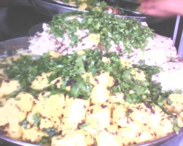
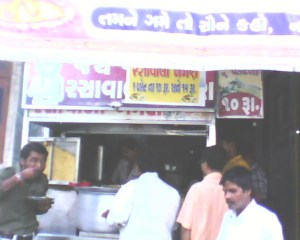
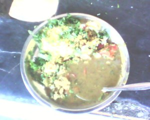
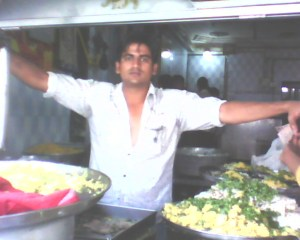
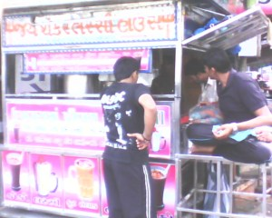
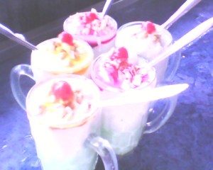

खाने पीने के मामले में सुरतीलालाओं का मिज़ाज़ बड़ा गज़ब का है, उन्हें ये रात दस बजे ये पता चले की वहां एक चाय का ठेला खुला है और क्या मस्त चाय बनती है तो फटाफट अपनी गाड़ी निकाल कर एक कट चाय पीने चले जयेंगे। कट चाय भले ही तीन की आती हो पर बीस रुपये का पेट्रोल खर्च करने में उन्हें बिल्कुल संकोच नहीं होता। आज भी काकी की पावभाजी खाने 18 किलोमीटर दूर कड़ोदरा चार रास्ता और एक अमरीकन मक्के का भुट्टा खाने के लिए दस किलोमीटर दूर कामरेज रोड़ पर आज भी लाइनें लगती है।
सुरत में खाने की एक से एक चीजें मिलती है जो आपको सुरत के अलावा कहीं नहीं मिलेगी और अगर मिल भी गई तो वो स्वाद नहीं मिलेगा जो सुरत में मिलता है। कई प्रख्यात चीजों में सुरती खमण सबसे खास है और ऊंधियु (ઉંધિયુ) हरे नारियल की पेटिस(લીલા નારેળ ની પેટીસ), गोटा (મેથી ના ગોટા) , लोचा (લોચો), खमणी (ખમણી ) , रतालु पूड़ी ( રતાળુ પુડી), घारी(ઘારી), पोंक(આંધણી વાની પોંક), राजा की लस्सी (રાજા ની લસ્સી) रेल्वे स्टेशन के सामने की नवरंग की आईसक्रीम, बोम्बे ज्यूस का थिक शेक जिसे आपको मोटी स्ट्रा से खींच कर पीना पड़ता है आदि है।
इनमें से पोंक तो हरी ज्वार की बालियां होती है जिन्हें सर्दी के दिनों में राख (आंधळी वानी) में पकाया जाता है और फिर काली मिर्च की तेज बारीक पतली सी सेव (नमकीन ) के साथ खाया जाता है। बस इसका स्वाद बस खाकर ही अनुभव किया जा सकता है। एक चीज और भी है घारी जिसे चंदवी पड़वे के दिन ( शरद पूर्णिमा के दूसरे दिन) खाया जाता है और एक दिन में सुरती लाला लगभग 10 करोड़ की घारी खा जाते हैं। 

आज से लगभग पैंतीस साल पहले ऐसे ही एक सुरती भाइयों की जोड़ी अशोक भाई और जेन्ती भाई ने सुरतीयों के स्वाद शौक को ध्यान में रखकर कोई नई चीज बनाने का निश्चय किया और उसके बाद जो चीज (वानगी ) बनी उसका नाम दोनों भाईयों ने रखा रसावाळा खमण! (રસાવાળા ખમણ ) और उसके खाने के बाद खाने वाली लस्सी! (जी हां एकदम गाढ़ी होने के कारण इस लस्सी को खाना पड़ता है आप इसे आसानी से पी नहीं सकते )
आज इतने सालों के बाद भी रसावाळा खमण सुरती लोगों की पहली पसंद में से एक है। पहले चौक बाजार में गुजरात मित्र प्रेस के पास की गली में एक ठेले पर यह दुकान चालू की और जब इसका स्वाद लोगों को भा गया तो इतनी भीड़ पड़ने लगी कि बाद में रोड़ पर जगह जब कम पड़ने लगी और फिर पास में ही एक दुकान में इस काम को चालू किया आज हाल यह है कि यह दुकान भी छोटी पड़ती है, और लोग रोड़ पर खड़े होकर इसे खाते हैं। और हां इन्हो 

आपने खमण के बारे में जरूर सुना होगा इसे लोग ढोकळा भी कहते हैं । लेकिन सुरत से बाहर यह स्पंज रूप में मिलता है जिसे लोग नायलोन खमण कहते हैं| अहमदाबादी नायलोन खमण में तो इतना मीठा पानी डाला जाता है कि उन्हें निचो कर शर्बत के रूप में पी लो। सुरती खाद्य चीजें बाकी गुजरात से एक मामले में अलग होती है। जहाँ पूरे गुजरात में मीठी चीजें पसंद की जाती है ( कई जगह तो होटलों में तो पंजाबी चना मसाला में भी मीथी दाल की तरह गुड़ डाला जाता है) वहीं सुरत की चीजों में तीखापन या तेज मिर्ची ज्यादा होती है।
अशोक भाई -जेन्ती भाई का रसावाळा खमण भी बहुत तेज स्वाद वाला होता है। खमण में एक 


आज अशोक भाई के पुत्र मिथुन भाई (9974622890) इस व्यवसाय को बखूबी संभाल रहे हैं। रसावाले खमण के साथ हांडवो, खमणी और भी कई चीजें है पर लोगों की पहली पसंद तो रसावाला खमण ही है। मिथुन भाई कहते हैं कि पिछले दिनों एनडीटीवी के विनोद दुआ भी उनकी दुकान पर आकर अपने कार्यक्रम “जायके का सफर” के लिए रसावाला खमण का स्वाद चख चुके हैं। कई किताबों में उनकी इस डिश के बारे में छप चुका है। साथ में मिथुन यह कहना भी नहीं भूलते कि रसावाले खमण खाने के बाद जब तक आप हमारी लस्सी नहीं पीएंगे मजा नहीं आयेगा।


उसी दुकान के एक हिस्से में जेन्ती भाई के पुत्र जैकी भाई (फोन: 09898277441 ) अपने पिताजी  


सुरती लोग जितना खाने के शौकीन होते हैं उतने ही खिलाने के और मेहमान नवाजी में तो उनका सानी कोई नहीं। जाते जाते मिथुन भाई की दुकान के बाहर दो लोगों को खमण खाते हुए बात करते सुनता हूं साल्लु आजे तो बहु तीख्खू छे @#$%^&* ( यहां वे अपने वाक्य के अंत में एक सुंदर सी गाली देना नहीं भूलते) अरे! मैने आपको सुरत की इतनी चीजें अच्छी अच्छी चीजों के बारे में बताया लेकिन एक और खास चीज के बारे में बताना तो भूल ही गया; और वो है सुरत की गालियां! पक्के और सच्चे सुरती लोगों के मुँह से निकले एक वाक्य में अगर तीन गालियां ना निकले तो समझ लीजिये की बच्चा अभी नादान है, सुरत के रंग में नहीं रंगा।
मैं सच कह रहा हूँ ना अलबेला खत्री जी और पीयूष भाई मेहता जी?
(यह माईक्रोमेक्स का क्यू थ्री (Micromax Q3) एकदम बकवास फोन है बातें बड़ी बड़ी करते हैं और कैमरा एकदम रद्दी है।आपने ऊपर के फोटो देखे हैं, अगर इसके विज्ञापन से प्रभावित हो कर खरीदने की सोच रहे हैं तो ना ही खरीदें, पछतायेंगे।)